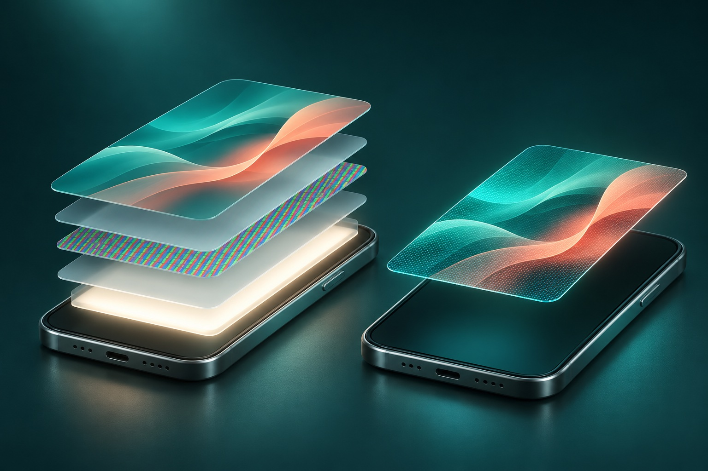
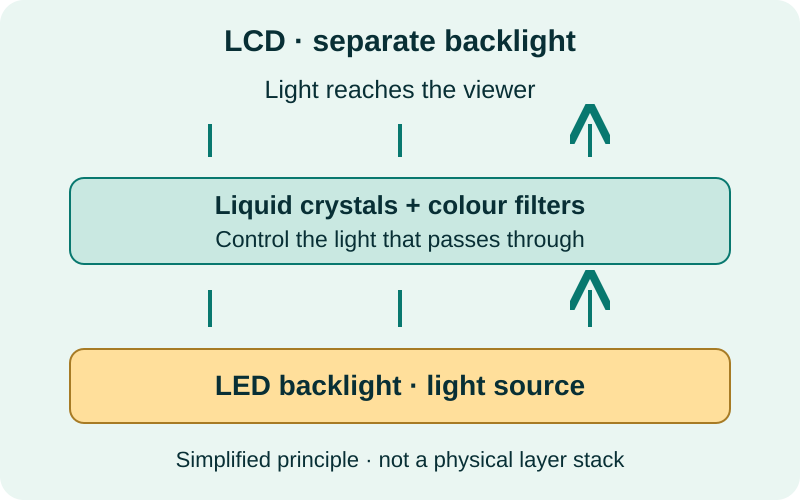
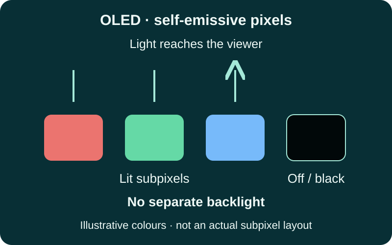

The main difference between LCD and OLED is where the light comes from. LCD controls light from a backlight; OLED creates light at each pixel. That affects blacks, contrast and power use, but it does not tell you everything about a screen's quality.

If you are comparing repair quotes, ask which technology your phone originally used and which part is being offered. Two screens that fit the same handset may deliver a different experience. This guide focuses on phones, where that distinction matters during a repair.
How does an LCD screen work?
LCD means liquid-crystal display. A backlight provides illumination. Liquid crystals and optical filters control how much light reaches the viewer through red, green and blue subpixels. In a typical phone LCD, the backlight illuminates the display even when much of the picture is dark.

In consumer screen descriptions, LED-backlit LCD is often shortened to “LED”. LED describes the light source in that case, rather than a different kind of liquid-crystal panel. Sony's display technology guide explains the same backlight distinction for televisions.
How does an OLED screen work?
OLED means organic light-emitting diode. Its light-producing elements emit light when driven electrically. A pixel showing black can be switched off, so OLED does not need a separate backlight. This is why dark scenes and white text on a black background can look especially striking.

AMOLED is a type of OLED: the “AM” refers to active-matrix control. IPS is a type of LCD. These names describe different aspects of a display; they are not resolution or repair-quality ratings. See Samsung's AMOLED explanation for the terminology.
LCD vs OLED phone screens at a glance
No panel type wins every category. Compare the exact device, its condition and, for repairs, the actual replacement assembly.
| Feature | LCD | OLED |
|---|---|---|
| Light source | Separate backlight. | Self-emissive pixels; no separate backlight. |
| Black levels | Some backlight can remain visible in dark areas. | Black pixels can switch off individually. |
| Brightness outdoors | Depends on the panel, reflections and phone settings. | Also depends on the panel, reflections and phone settings. |
| Colour accuracy | Depends on calibration and display quality. | Depends on calibration and display quality; extra saturation is not necessarily extra accuracy. |
| Power use | Backlight brightness is an important factor. | Both brightness and the displayed image matter; darker content can use less display power. |
| Image retention | Not subject to OLED's organic-emitter ageing mechanism; other image-retention faults can still occur. | Uneven pixel ageing can cause permanent burn-in. |
| Repair cost | Often a lower-cost option where compatible parts exist. | Often costs more; part origin, grade and model matter. |
What difference will you notice every day?
Black backgrounds and video
OLED's pixel-level control makes it a strong choice for dark interfaces and films. LCD blacks may look lighter in a dim room. Ambient light and reflections still affect both, and a comparison photo on another screen cannot reproduce the full difference reliably.
Brightness, colour and scrolling
Do not assume every OLED is brighter, more accurate or smoother than every LCD. Read the particular phone's specifications and try it at a comfortable brightness. Refresh rate, measured in hertz, is separate from panel type: “OLED” alone does not promise 120 Hz. Calibration and software display modes also change how colours look.
Battery life and dark mode
Dark mode can reduce OLED display power because dark pixels emit less light. The saving depends on brightness and what is on screen; it is not a fixed improvement in whole-phone battery life. Purdue's OLED power research highlights the importance of those conditions. A dark theme on LCD does not remove the need for a backlight.
If your phone suddenly loses charge, also check apps, reception and battery condition. Our phone battery-drain guide explains where to start.
Burn-in and long-term care
OLED can develop lasting image outlines through uneven pixel ageing. Temporary image retention may fade; permanent burn-in is different. Avoid leaving static content at maximum brightness for long periods and use sensible screen timeouts. Apple's OLED display guidance explains these behaviours and recommends automatic brightness.
Both LCD and OLED can be damaged by impact, pressure or liquid. Neither name makes a phone drop-proof, and an illustration of panel layers cannot predict which handset will survive a fall.
LCD or OLED: which should you choose for a screen replacement?
Start with the original specification, then compare the quoted part. Matching the original technology is a useful starting point, but it does not guarantee original performance. A screen assembly includes more than the image-producing panel, and part quality, installation and software compatibility all matter.
If your phone originally used OLED
Ask about a suitable OLED replacement first. A compatible aftermarket LCD may be offered for some models as a budget alternative, but it changes the display technology. Ask what differences to expect in fit, black levels, brightness, touch and supported features before deciding.
If your phone originally used LCD
A correctly specified LCD is the normal starting point. Do not assume an OLED assembly can be fitted as an upgrade: the phone and replacement part must be designed to work together.
Aftermarket choices are model-specific. For example, iFixit's explanation of LCD replacements for the iPhone X family describes a budget alternative to OLED. It is an older example, not evidence that every newer phone supports the same swap or that TECHM8 stocks those parts.
Five questions to ask before approving a repair
- What panel is included? Ask for LCD or OLED, the part's origin and whether it is new, refurbished or previously used.
- What does the grade mean? Labels such as “premium”, “OEM quality”, “hard OLED” and “soft OLED” need a specific explanation. They do not by themselves prove a genuine manufacturer part.
- Which features are supported? Confirm expected brightness, touch response, refresh rate and model-specific features, rather than assuming they will match the original.
- Are calibration or software steps required? Ask whether any parts-history message may appear and how the completed repair will be checked.
- What is covered? Confirm the total quote and the applicable warranty terms, exclusions and process for reporting a problem.
Apple documents possible touch, colour, brightness and compatibility issues with non-genuine iPhone displays. “OLED” on a quote identifies a technology, not proof of a genuine Apple part or a guarantee of every original feature.
Need help comparing a screen repair quote?
Send TECHM8 your exact phone model and fault symptoms. The store can confirm repair capability, available parts, price and timing after assessment. An online request is an enquiry, not a confirmed appointment or a fixed quote.
Visit Park Ridge, Fairfield, Toowong, North Lakes or Brassall. Contact your chosen store before travelling to check parts and availability.
LCD and OLED: common questions
Is OLED better than LCD for a phone?
OLED offers deeper blacks and pixel-level light control. LCD can be a practical lower-cost option. Brightness, colour accuracy, touch response and reliability depend on the specific phone and panel, so compare the exact models or replacement parts.
Is AMOLED the same as OLED?
AMOLED is a type of OLED that uses an active-matrix circuit to control its pixels. IPS describes a type of LCD. Neither label by itself tells you the display resolution, refresh rate or replacement-part quality.
Can I replace an OLED phone screen with an LCD?
Compatible aftermarket LCD assemblies exist for some OLED phone models, but this is a change in display technology. Fit, brightness, colours, touch behaviour, supported features and power use can differ. Confirm the exact model and part with the repairer before approving a replacement.
Does OLED always use less battery than LCD?
No. OLED power use changes with the image and brightness. Dark content can reduce display power, but bright pages and high brightness still consume power. Whole-phone battery life also depends on the processor, signal, apps and battery condition.
Can an OLED screen get burn-in?
Yes. Uneven pixel ageing can leave a lasting outline after prolonged display of static content, especially at high brightness. Temporary image retention is different and may fade. Use the device maker's brightness and screen-timeout guidance.
How can I tell whether my phone has an LCD or OLED screen?
Check the manufacturer specifications for your exact model. If the screen has been replaced, also check the repair invoice or ask which panel was installed. A black-background test can suggest a difference, but is not proof of the technology or part quality.
Sources and further reading
Prepared by TECHM8 using the manufacturer and research references linked above. Sources checked on 11 November 2026. This is a technology explainer, not a laboratory test or a specification for a particular replacement part.
- Sony: LCD backlights and OLED display types
- Samsung Australia: AMOLED terminology
- Apple: OLED display behaviour and care
- Apple: genuine iPhone displays and replacement considerations
- Purdue University: dark mode and OLED energy use
- iFixit: an example of model-specific LCD replacement options
More help: iPhone repair enquiries · Samsung repair enquiries · How to sign out of the App Store.